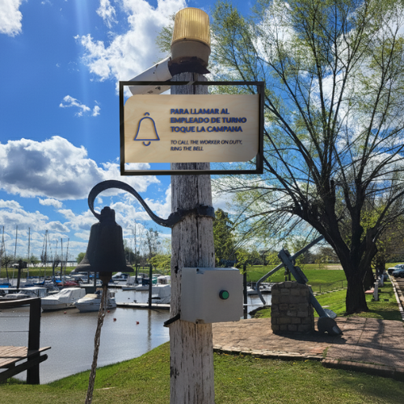
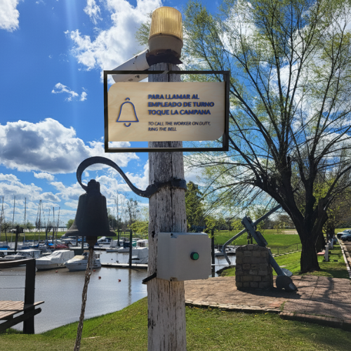

Proyecto Señalética Yacht Club Paysandú

En este proyecto desarrollé un sistema de señalización integral para el Yacht Club Paysandú, con el objetivo de mejorar la experiencia de socios y visitantes a través de una orientación clara, intuitiva y elegante. Cada pieza fue diseñada para integrarse armónicamente con la identidad visual del club, reflejando su carácter náutico y sofisticado, al mismo tiempo que cumplía funciones prácticas de guía y seguridad.
El desafío consistió en equilibrar estética y funcionalidad: la señalética debía ser visible y comprensible en distintos entornos interiores y exteriores sin perder coherencia con el estilo exclusivo del club. La propuesta buscó no solo facilitar la circulación y orientación, sino también reforzar la imagen del espacio como un lugar cuidado, profesional y memorable, donde cada detalle contribuye a una experiencia completa y agradable para quienes lo visitan.
Proceso de Diseño
Investigación y análisis: Se estudiaron los recorridos y flujos de visitantes, identificando puntos críticos donde la señalética era necesaria y considerando factores como la distancia de lectura, visibilidad y accesibilidad.
Conceptualización: Desarrollo de un lenguaje visual coherente con la identidad del club: colores, tipografía y formas inspiradas en el estilo náutico y elegante.
Diseño de pictogramas: Creación de pictogramas personalizados, originales y consistentes, que facilitan la comunicación visual de manera clara y universal.
Selección de materiales: Se optó por materiales duraderos y de alta calidad, adecuados para interiores y exteriores. Se combinaron acrílicos, metales con acabado mate y maderas tratadas, logrando resistencia, elegancia y armonía con la arquitectura del club.
Diseño de piezas y ubicación: Elaboración de señalización direccional, informativa y de seguridad, considerando formatos, materiales y colocación estratégica en cada espacio.
Prototipado y ajustes: Implementación visual de los diseños en los espacios reales, realizando ajustes para garantizar visibilidad, legibilidad y coherencia estética.
Detalles y Materiales
Para el desarrollo de la señalética del Yacht Club Paysandú se seleccionaron cuidadosamente materiales que combinaran durabilidad, funcionalidad y elegancia, asegurando que cada elemento resistiera las condiciones tanto de interiores como de exteriores. Se optó por acrílicos resistentes a la intemperie para los carteles informativos y de dirección, garantizando claridad y visibilidad frente al sol, la humedad y el viento. Los metales con acabados mate o anodizados se emplearon en soportes, marcos y algunas piezas destacadas, aportando solidez y un acabado sofisticado que se integra armoniosamente con la estética náutica del club. Además, se incorporaron maderas tratadas para exterior en señalética decorativa y elementos que se integran al entorno, sumando calidez, textura natural y resistencia a la exposición al aire libre.
Cada material fue elegido no solo por su funcionalidad, sino también por su capacidad de transmitir calidad, cuidado y coherencia visual, reforzando la identidad del club y elevando la experiencia de quienes lo visitan. La combinación de acrílico, metal y madera permitió crear un sistema de señalización elegante, consistente y duradero, donde cada detalle contribuye a la percepción de exclusividad y profesionalismo del espacio.
Conclusión
En conjunto, el proyecto de señalética del Yacht Club Paysandú logró integrar de manera armoniosa funcionalidad, estética y coherencia con la identidad del club, transformando la orientación dentro del espacio en una experiencia intuitiva, clara y placentera para socios y visitantes. Cada elemento, desde los pictogramas diseñados completamente desde cero hasta la cuidadosa selección de materiales duraderos y sofisticados, fue pensado para transmitir calidad, exclusividad y atención al detalle.
Más allá de cumplir una función práctica, este sistema de señalización se convirtió en un componente integral del diseño del club, reforzando la estética náutica y la percepción de profesionalismo del espacio. La combinación de acrílico, metal y madera, junto con la armonía entre tipografía, color y formas, logró que la señalética no solo guiara, sino que también contribuyera a la experiencia estética y emocional de quienes visitan el club, elevando la percepción del lugar y destacando la importancia de cada detalle en el diseño de espacios exclusivos.
×


 (1000 x 800 px) (1080 x 800 px) (1920 x 1080 px) (1920 x 1350 px).png)


 
